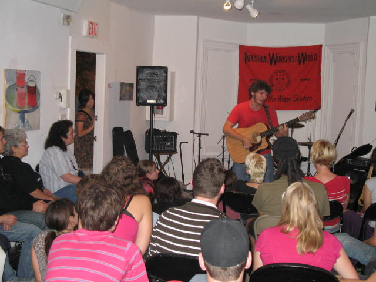
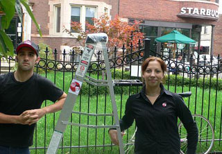
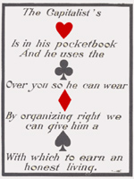

Submitted on Fri, 09/15/2006 - 3:02pm
The Boston IWW raised $380 for the Starbucks Workers Union in the first of a series of planned IWW Solidarity Nights. Solidarity for Fellow Workers, great music and food was what it was all about. The benefit had a great turnout despite a last minute change in venue. In between act FW's from our branch spoke to the crowd about what is going on with the campaign and the fired Baristas. The word defiantly got out to the community of the continuing assault on Starbucks workers by the company. The event was held on September 9th at the Zeitgeist Gallery in Cambridge, and featured performance's by Dieselhorse, Evan Greer(The riot folk Collective), Jake and the Infernal Machine, Clara Hendricks, Bill Bumpus and Ryan Harvey.
Submitted on Sat, 09/09/2006 - 12:56am
By Daniel Gross and Joe Tessone - Znet, September 08, 2006

Requests have been routinely made and ignored for the purchase of a stepladder. It is vital for our safety that we have a stepladder available to use for such tasks as changing light bulbs, reaching boxes on high shelves, and cleaning ceiling tiles. Currently, we are forced to balance ourselves on unstable cafe tables to accomplish tasks in hard to reach places. Our store is not ergonomically designed and until it is, the purchase of a stepladder would be a simple solution to a number of safety concerns.
-Excerpted from an IWW Starbucks Workers Union demand letter and declaration of union membership served on management by baristas at a Chicago Starbucks on April 29, 2006
Submitted on Wed, 09/06/2006 - 3:03am
In a recent entry on the website http://www.bloggingstocks.com, Michael Canfield argues that the IWW's organizing effrots at Starbucks will come to naught:
Retailers like Starbucks operate on such a thin margin that -- were Starbucks to become widely unionized -- there would be some transfer of money into union dues, but any significant increase in pay or benefits would result in the need to cut overall staff, something a union would not be likely to tolerate.
This demonstrates the foolishness in taking the business press seriously when it comes to analyzing unions.
Submitted on Wed, 09/06/2006 - 2:48am
 Anarcho-Syndikalistische Gewerkschaft
Anarcho-Syndikalistische Gewerkschaft
FAU-IWA GeKo / International Secretariat • P.O.Box 20 43 • 30020 Hannover • Germany
Email: is@fau.org
Starbucks Headquarters
2401 Utah Avenue South
Seattle WA
Hannover / Germany, 19th of August 2006
Illegal layoff of IWW union member
To whom it may concern,
We protest against the layoff of the IWW Members Daniel Gross, Evan Winterscheidt, Joe Agnis Jr and Charls Fostrom.
We demand to stop your hostile behavior toward unions and that you immediately withdraw the layoff of our IWW comrades.
We reserve the right to inform your employees and the public in Germany about your scandalous behavior. To your knowledge our sister unions worldwide are informed to make further steps in informing the public in case your are not withdraw the
layoff.
Submitted on Tue, 09/05/2006 - 4:08am
By Ron Grossman - Chicago Tribune, September 4, 2006.
 In the city of its birth, and 101 years later, the Industrial Workers of the World is still trying to strike a blow for the working class.
In the city of its birth, and 101 years later, the Industrial Workers of the World is still trying to strike a blow for the working class.
Just ahead of Labor Day, baristas at the Starbucks in Logan Square told management that they wanted to be represented by the IWW. A veteran of battles that once made the union movement a major force in American life, the IWW has been largely moribund recently.
Starbucks' management was ready for the faceoff, which occurred during a periodic meeting of employees and managers at the giant coffee merchant's store at 2759 W. Logan Blvd., some workers reported. Corporate honchos would not accept employee demands and handed out copies of the preamble to the IWW's constitution in an effort to discredit the union.